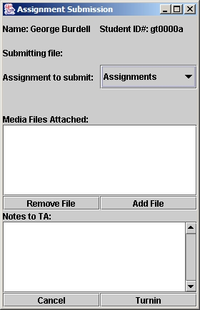

When you are ready, you can turn in your homework assignments directly from JES.
The Turnin Menu
You will turn in your homework assignments using the Turnin menu. Select "Assignment" to turn in the file that is currently open in JES. Select Register to make sure that your setting are correct.

Settings
Before you can turn in your homework assignments through JES, you must register yourself. Depending on how your course is set up to turn in assignments, you could have two different registration dialogs.
Coweb Turnin
If your course has a turnin coweb set up, you will be presented with this dialog:

Your name is probably not George Burdell, so don't put his name there.
Your Student # is the number your instructor identifies you by. (GT Students use GT numbers)
Email Turnin
If your course has email turnins, you will be presented with this dialog:
| Some common mail servers include: | |
| ATT Broadband: | mail.attbi.com |
| ATT Worldnet: | mail.att.com |
| Earthlink: | mail.earthlink.net |
| GA Tech: | smtp.mail.gatech.edu |
| GTE: | smtp.gte.net |
| Mindspring: | mail.mindspring.com |
| Yahoo: | smtp.mail.yahoo.com |
To turn in a homework assignment, first open the file that you wish to turn in. Then make sure that you are connected to the Internet and select "Assignment" from the Turnin menu.
The "Assignment Submission" dialog box will appear (see image below). Select the assignment you wish to turn in from the "Assignment to Submit" menu. Click on "Add Attachment" to add any extra files (in addition to the one that it open in JES). You can add multiple attachments before you turn in the assignment.
When you are ready, click on Turnin.
If you want to turn in a second version of an assignment, you can do so through JES as long as you do so before the assignment is due. For example, if you turn in an assignment two days before it is due, and then find a mistake and correct it, you can still turn in the corrected version as long as you do within two days. JES will not prevent you from turning in assignments after they are due; however, they will not be accepted. You are responsible for turning in assignments before they are due.
If you want to turn in files other than programs (for example, Excel or Word documents), simply create a file in JES that includes your name, gt#, and the assignment you are turning in. Save this file as something.txt and then select "Assignment" from the Turnin menu. Now you can attach any files you want and turn in the assignment.

In the event that something goes wrong and you cannot submit your assignment through JES, you can submit your assignment via email. Go to the course website: coweb.cc.gatech.edu/cs1315, find your TA's email address and email the assignment and any other attachments directly to your TA.